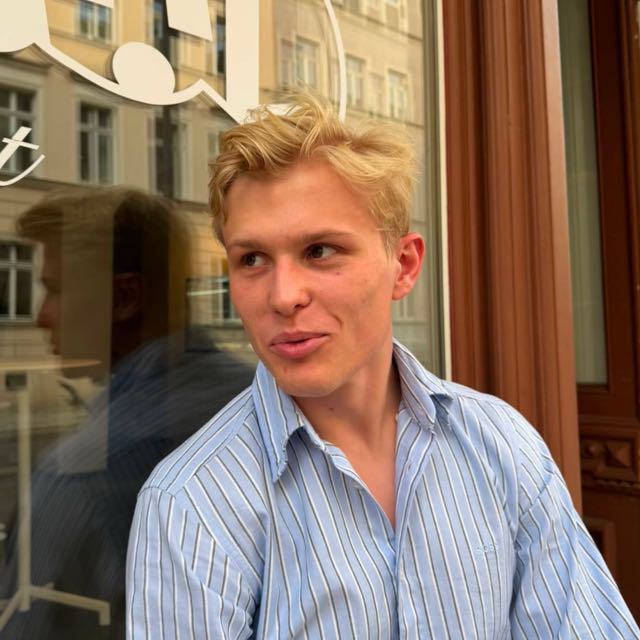

Ich lebe gerade noch in Berlin. Ich glaube, dass KI in etablierten Branchen vor allem durch den Aufbau neuer Unternehmen Fuß fasst. Gerade schaue ich mir den Bauingenieurmarkt genauer an.
Abseits davon fahre ich Rennrad im Rapha Cycling Club und diskutiere bei Veranstaltungen der Deutschen Gesellschaft für Auswärtige Politik.
Meine Kommentare zu Artikeln über internationale Politik findest du hier.
I'm in Berlin for now. I believe AI will take hold in established industries through the creation of new companies. Right now, I'm looking closely at the civil engineering market.
Outside of that, I ride with the Rapha Cycling Club and join discussions at events hosted by the German Council on Foreign Relations.
You can find my comments on articles about international politics here.